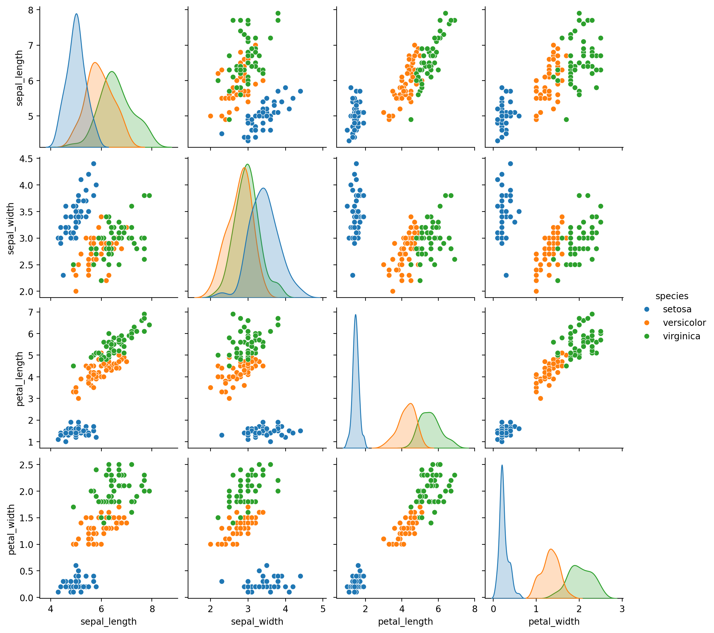

import numpy as np
import matplotlib.pyplot as plt
from matplotlib.colors import ListedColormap
from sklearn.model_selection import train_test_split
from sklearn.preprocessing import StandardScaler
from sklearn.datasets import make_moons, make_circles, make_classification
%matplotlib inline
%config InlineBackend.figure_format = 'retina'Random Forest Feature Importance
ML
# Iris dataset
import seaborn as sns# Load IRIS dataset from Seaborn
iris = sns.load_dataset('iris')
X, y = iris.iloc[:, :-1], iris.iloc[:, -1]import seaborn as sns
# Pairplot
sns.pairplot(iris, hue="species")
from sklearn.ensemble import RandomForestClassifierrf = RandomForestClassifier(n_estimators=10,random_state=0, criterion='entropy')rf.fit(X, y)RandomForestClassifier(criterion='entropy', n_estimators=10, random_state=0)In a Jupyter environment, please rerun this cell to show the HTML representation or trust the notebook.
On GitHub, the HTML representation is unable to render, please try loading this page with nbviewer.org.
RandomForestClassifier(criterion='entropy', n_estimators=10, random_state=0)
# Plot trees in forest via graphviz
from sklearn.tree import export_graphviz
import graphviz
# Visualize each tree in the Random Forest
for i, tree in enumerate(rf.estimators_):
# Create DOT data for the i-th tree
dot_data = export_graphviz(tree, out_file=None,
feature_names=iris.columns[:-1],
class_names=iris.species.unique(),
filled=True, rounded=True,
special_characters=True)
# Use Graphviz to render the DOT data into a graph
graph = graphviz.Source(dot_data)
# Save or display the graph (change the format as needed)
graph.render(filename=f'../figures/ensemble/feature-imp-{i}', format='pdf', cleanup=True)
graph.render(filename=f'../figures/ensemble/feature-imp-{i}', format='png', cleanup=True)from IPython.display import Image
Image(filename='../figures/ensemble/feature-imp-0.png')
dt0 = rf.estimators_[0]dt0DecisionTreeClassifier(criterion='entropy', max_features='sqrt',
random_state=209652396)In a Jupyter environment, please rerun this cell to show the HTML representation or trust the notebook. On GitHub, the HTML representation is unable to render, please try loading this page with nbviewer.org.
DecisionTreeClassifier(criterion='entropy', max_features='sqrt',
random_state=209652396)dt0.get_params(){'ccp_alpha': 0.0,
'class_weight': None,
'criterion': 'entropy',
'max_depth': None,
'max_features': 'sqrt',
'max_leaf_nodes': None,
'min_impurity_decrease': 0.0,
'min_samples_leaf': 1,
'min_samples_split': 2,
'min_weight_fraction_leaf': 0.0,
'random_state': 209652396,
'splitter': 'best'}dt0.tree_.impurityarray([1.57310798, 0. , 0.98464683, 0.34781691, 0. ,
0.81127812, 0. , 0. , 0.12741851, 0. ,
0.2108423 , 0. , 0. ])